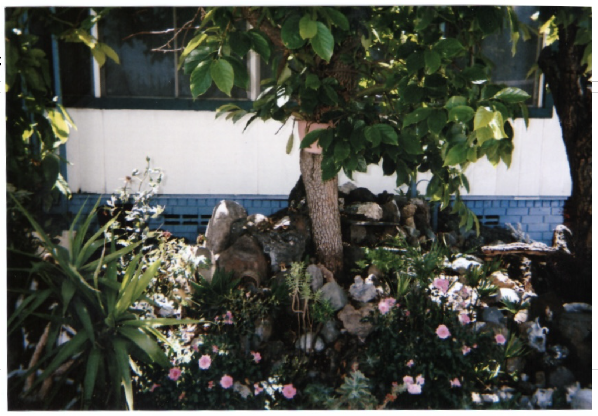
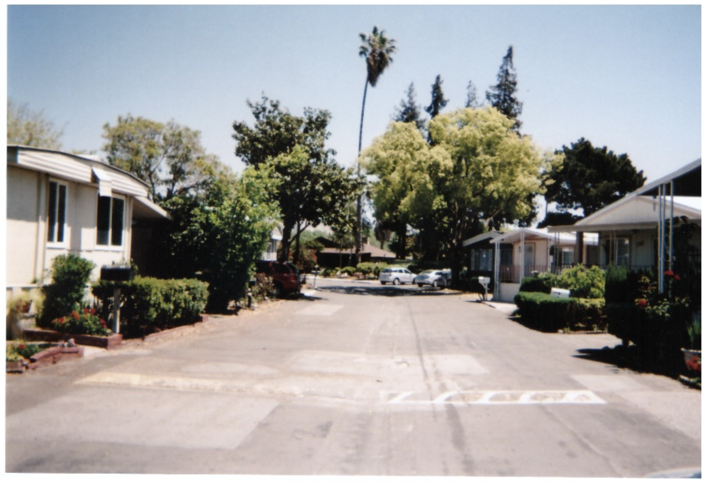
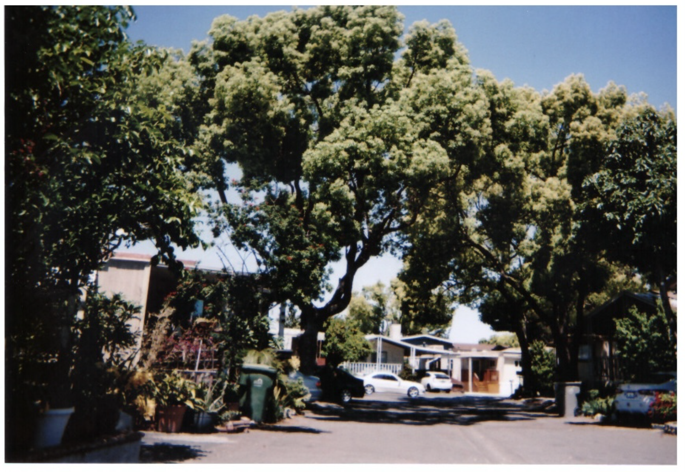
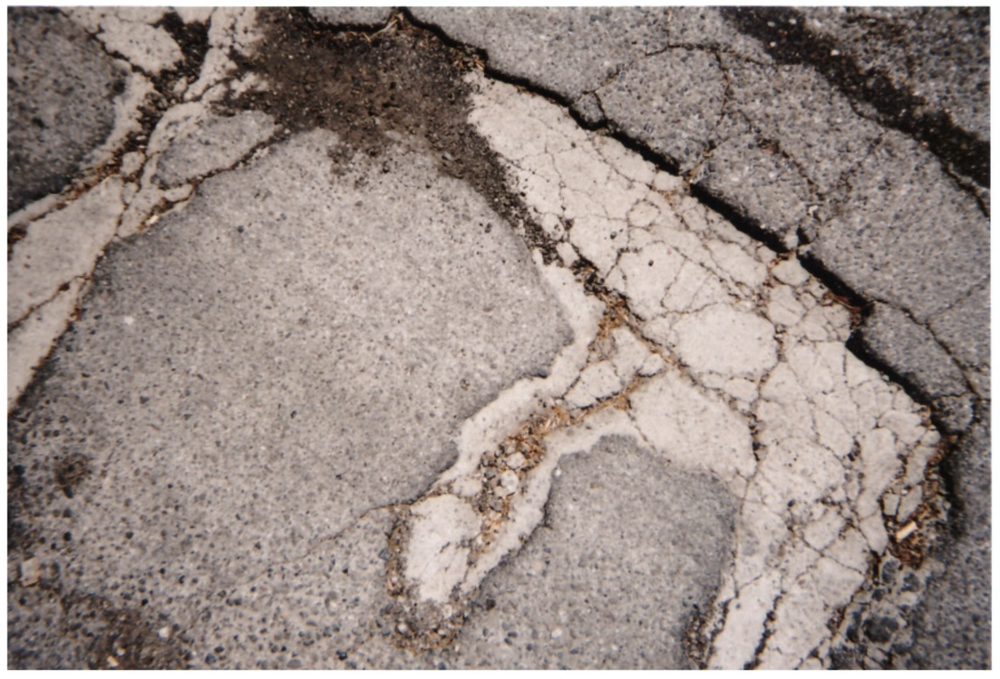
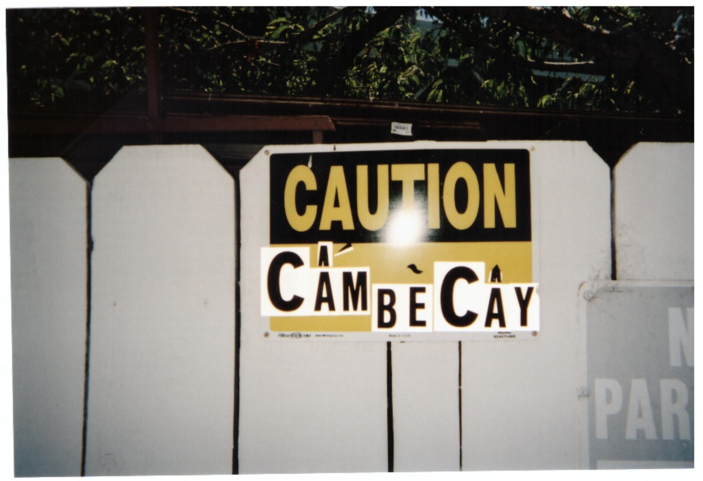
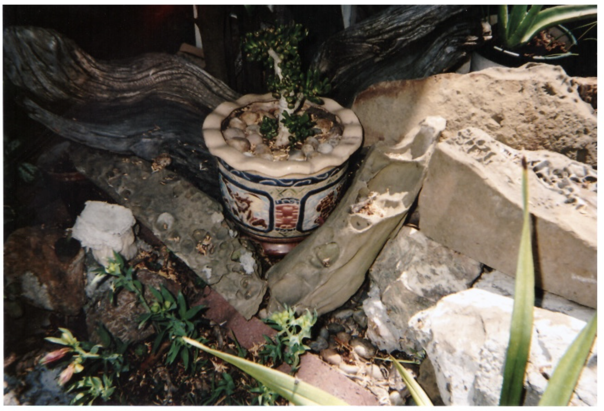

When considering the question of whether Asian American memories have the power to transform systemic oppression, I thought about transgressing power relations through collective sensory experiences. The intention of this audio is to create a semi-meditative landscape through sound that allows you to traipse through what you could call my inner self. The memories I attempt to access through sound are relative to temporality; accessing these auditory vignettes at this point in time means that these memories will sound dilapidated, lapsed over one another, structurally unsound, and sometimes inaccurate. I reflect this imagery by doctoring these sounds, playing with its speed, adding distortion filters, and creating stereo expanders that turn the sounds environmental and immerse, if you are wearing headphones. The photos are of my grandma’s neighborhood and were taken on a disposable camera in 2021. They act as interstices between vignettes, and their large size allows you to reflect during the ample time it takes to scroll to the next vignette. By toying with the idea of using sound to chart my autoethnography, I’m able to challenge the linear chronology of memory, illustrating the loss of precision through decay. Through decay, it becomes an entirely new simulacrum of itself. Droning stretches of decelerated noise invoke the feeling of a memory on the cusp of fading, but also symbolize the comfort-seeking mechanisms that occur in these returns. Nostalgia apprehends reality for the sake of familiarity.
Audio Description: Rain sounds, temple chants, church gongs, kitchen noises, and mourning doves play intermittently throughout the audio track, ebbing in and out, often overlapping. Throughout the audio, women are heard distantly singing traditional Vietnamese music. The audio is slowed down and slightly distorted. An audio clip of a piano playing is extremely slowed down, reduced to a discordant pile of frequencies and glitches that glisten like wind chimes.
Even though many people lived in that mobile home on Golden Wheel Park Drive, I always believed that the house was hers, and I referred to it as such.I spent nearly every day under the hospice of my grandma and her house while my parents were away at work. I made my strongest memories at this house, and these memories are the tautly braided rope that holds me upright.
She took care of the house, in its thin plywood sheet walls and styrofoam foundations, as if she was the sole proprietor. She fed, washed, and reprimanded the house. She trimmed, pruned, and caressed the persimmon tree at the front edge of the house. In return, the tree brought home boxes of tender hachiya persimmons that sagged the branches. They plucked themselves off the tree and covered the concrete driveway with sticky pudding. I think now and it feels like she did it all on her own.
Her secret was a weighted hula hoop with wavy ridges. It was a staggering 41 inches in diameter and swung around your hips with an intense velocity that could only be matched by an uptempo bolero track playing from her CD player.
My unofficial Buddhism mentor and advisor was my uncle. He had been handicapped since he was ten with a medical condition that rendered his legs unusable. All day, he laid supine in his twin mattress, reclining on his side, leaning his head against his left elbow. I realized if he dawned a modest robe, he would resemble Buddha himself. He spent hours dwelling in chat rooms with other Vietnamese users; perhaps fellow Buddhas, their usernames cryptic and nondescript. The other time he spent with me and my sister. We watched conspiracy videos together with thumbnails of Buddha appearing from the sky, emblazoned with a big, red circle and a fat arrow next to it. Maybe the day after, we’d watch ghost orbs on security cameras, whose footage was slowed down to an exorbitant speed for us mortal viewers.Seeing, to him, wasn’t always a prerequisite for believing. Those YouTube videos were enough to stipulate a conclusion that Buddha was really in the sky. My uncle’s concern was over what could be there as opposed to what wasn’t. Those chat rooms take form beyond their digital confines. Yes, physicality explains what is there, but puts a ceiling on belief. Rather, it is the spirit that takes precedent over the material.
My unofficial Buddha advisor also taught me how to meditate. First, our trial run: we sat on his bed cross-legged with the room lights turned off. In the dimly grey bedroom, I closed my eyes and held my hands together with one palm on top of the other, thumbs lightly touching. He told me I had to empty out all my thoughts completely. The last thing I saw, before my eyelids swung closed, was a can of wasabi peas. I couldn’t stop thinking about wasabi peas. I couldn’t stop thinking about ridding myself of wasabi peas. I lied, of course, when I opened my eyes and my uncle asked me how it went. I’ll do better next time.
Tony lived in the mobile home across the street from my grandma’s. He was two years my senior, and he had a big mole on his face that made him indelibly distinguishable from the rest of the children on the block. It also made him defensive and he had a penchant for self-esteem issues.Me and Tony were acquaintances at best. However, we were the closest in age compared to everyone else, and he naturally took a liking towards me. We greeted each other when we biked past each other and held the door open for one another at the community pool. We biked in circles around each other at the recreational courtyard, where our tires ran over the dilapidated shuffleboard lines on the ground.
One day, Tony and I had a confrontation in front of his house. While I couldn’t remember what had happened for the life of me, I do remember falling on the ground, and I do remember my palms, bleeding and scuffed. I do remember that an expletive was involved, and I do believe that it was the word “faggot.” These details are blurry; what remained lucid in my mind was my sister coming from behind, pushing Tony onto the ground with equal to greater force, and her hoisting me up by my pits and dragging me back inside through the front door for all but 10 feet.
Me and my sister were silent sworn protectors of each other, bound by a pact we made under the comforter when I was 6, and her 11. We were members of the SSN society, as in Sean and Serena Nguyen (not to be mistaken with Social Security Number). We both signed an invisible contract with invisible blood, wherein if one of us was too scared to venture downstairs alone at night, the other was obligated to follow. If either of us were to refuse, we would unfurl an invisible scroll as a reminder of what we signed up for.My grandpa picked me up from school everyday in his Nissan Murano, where I was subjected to the stale odor of cinnamon tea. This, plus the warmth emanating from the black polyester seat covers, laid me to rest for the entire duration of our 20-minute commute. His dashboard was littered with the scratched off latex from lottery cards. He was a haunt at this particular liquor store near my school. Even in his condition today, principally bed ridden and feeble, scratchcards are his return to form, re-inviting a special adrenaline in its test of luck.
One innocuous school day, me and my grandpa were waiting in the car for my sister, who was in high school at the time. We had to kill time together because I was dismissed earlier than her; him dutifully sipping on cinnamon tea, and me getting a headstart on my worksheet. Time passed and my sister still hadn’t walked down the hill towards our car, and when she finally showed face, it was approaching dusk. She had stayed back after school to do corrections on her math test, and neglected to inform my grandpa about her change in plans. In a ballistic stroke of rage, he screeched his tires and took off as soon as she was about to grab the door handle. I melted into a complete fit. I kicked the back of his seat and I screamed. “She’s gonna die out there,” I yelled at him before collapsing into a complete sob: “We need to turn back!” I was dumbstruck at his ambivalent face, his indifferent face. I couldn’t believe him and his lack of consequence. I saw him pull into a parking spot at the liquor store. I cried until it hurt. I watched his forearms through the window while he did his scratchers on the roof of his car.
When we eventually drove back to the bottom of the hill, she looked sullen on the curb. She got in the car silently, enduring an agonizing reprimanding from my grandpa. She turned around and looked at me, and saw my red eyes and my snot. I was too scared, and frankly, exhausted to say anything. But I looked at her as if to say, I did everything I could. Look! When she looked back at me, her eyes said, I know.
As I write this, and I revisit the niches in the ground where these memories lay, I deconstruct and construct myself over and over again. I return to my naivete to relive them, and then I rebuild myself with what I know now. When I come back to these ideations of myself, reimagined as a younger child, I come back with a gift wrapped neatly with a bow. Inside contains tools to make meaning, the theories, texts, and lived experiences from the future, to make sense of all things that were irrational to me then: directionless frustration, putrid rage, irrevocable sadness. Anger put onto me, tears put out from me. Masculine discombobulations and feminine affectations. I loathed what the men in my life taught me; taking up space, loud, violent assertions.These men represented my nation. I thought to myself then, if that is what my nation is, then I don’t want anything to do with it. Vietnam, torrential downpour of shame. It is much more than that. I retreated to the house I built for myself with my own two hands using pillows and blankets, and waited for my grandma’s calloused hands to retrieve me. 